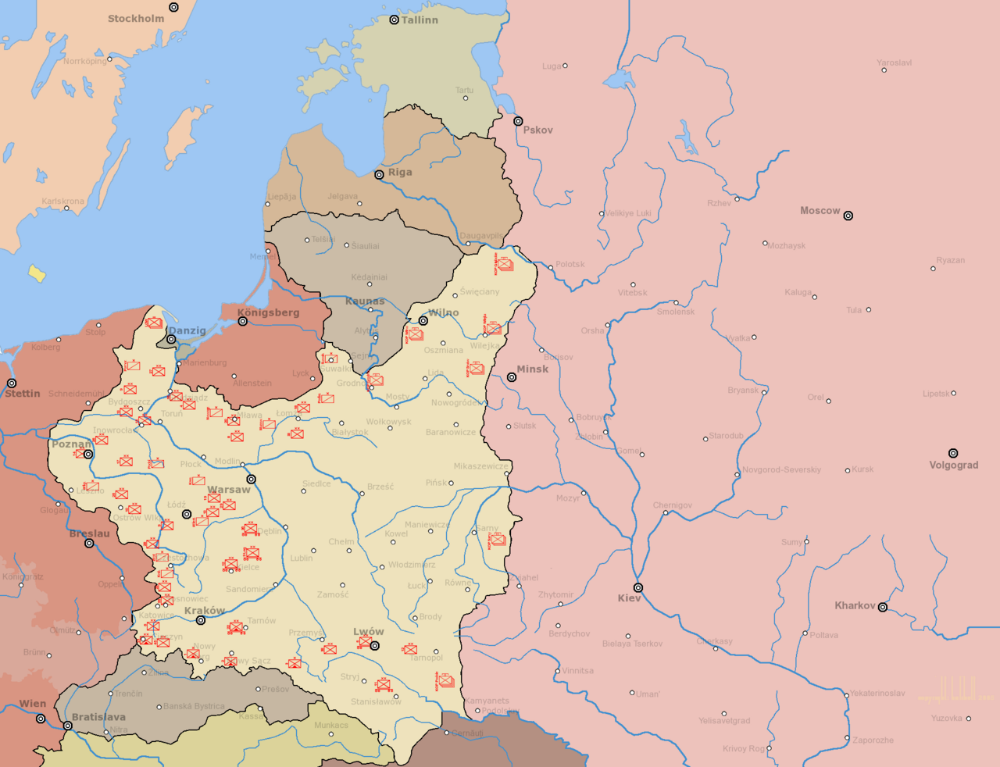
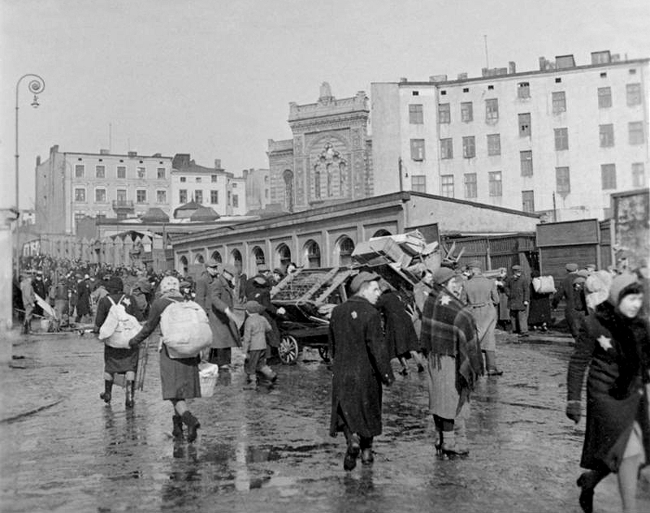
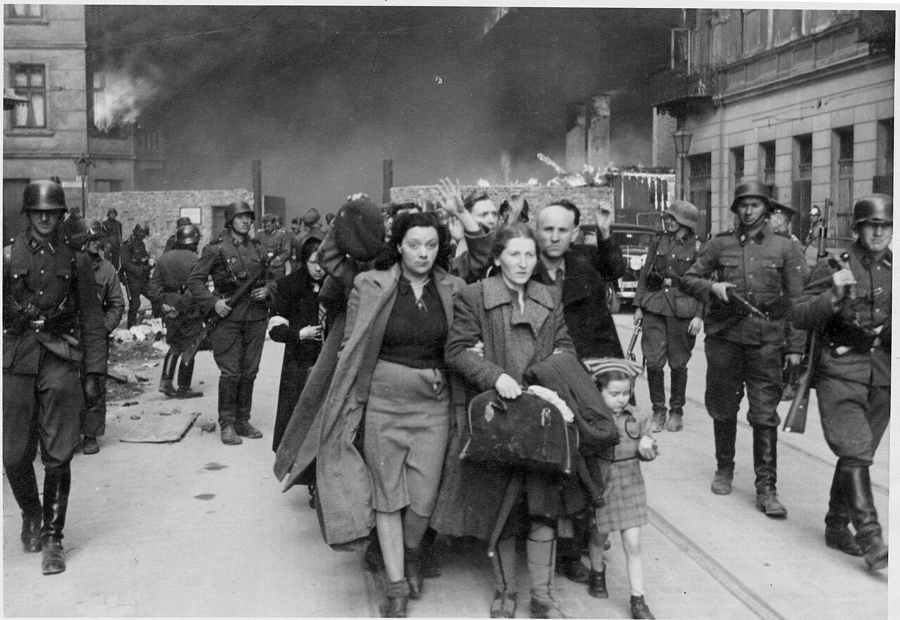
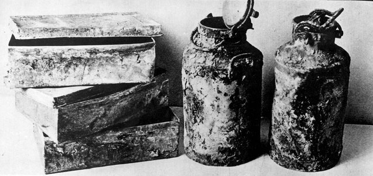
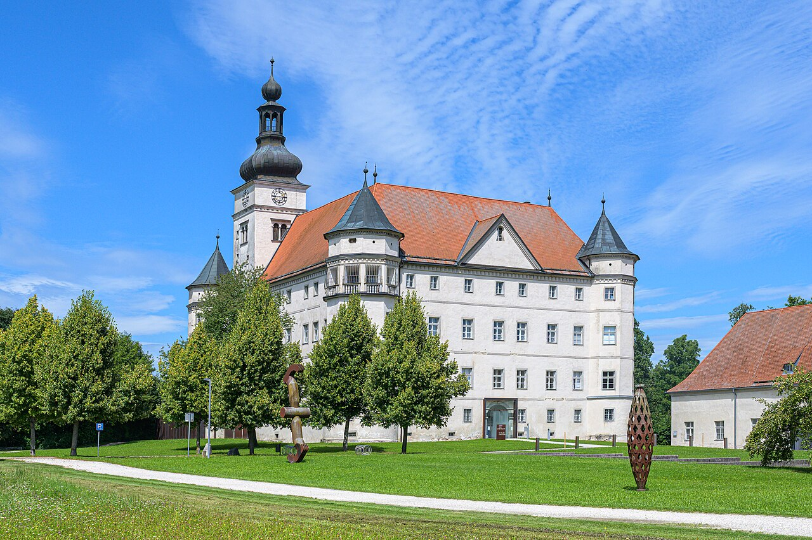
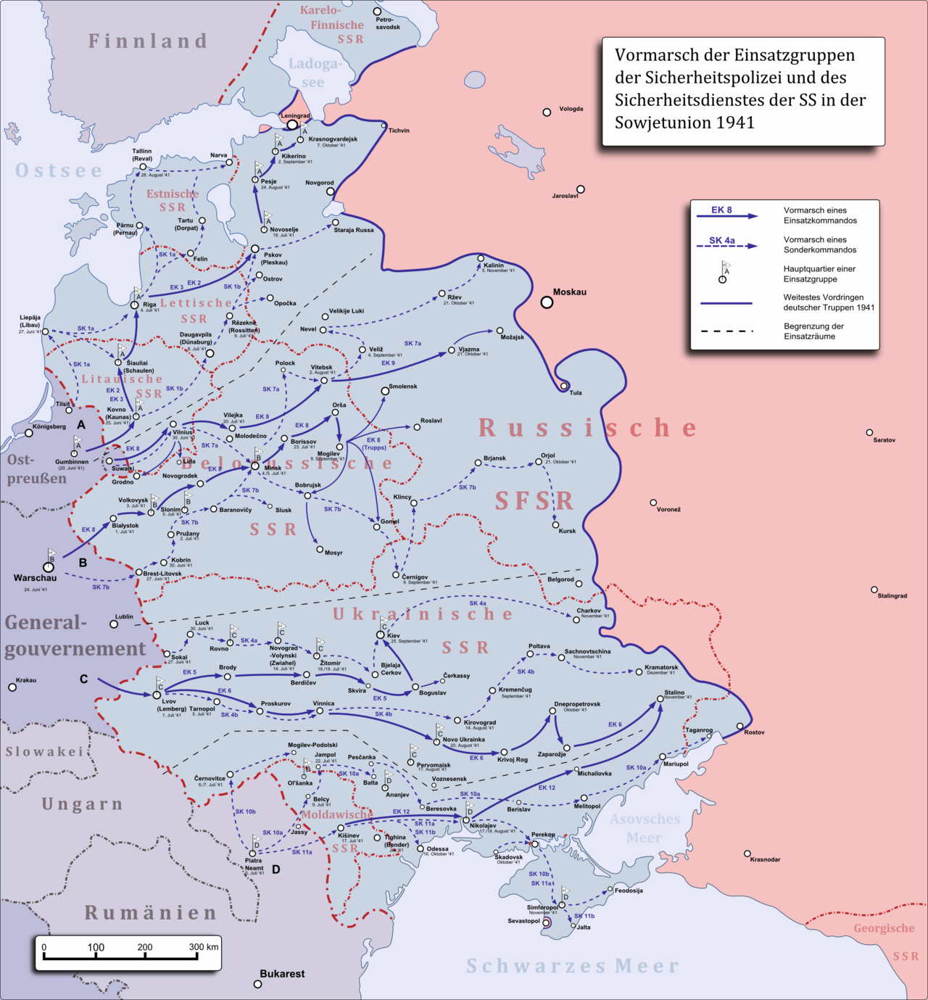
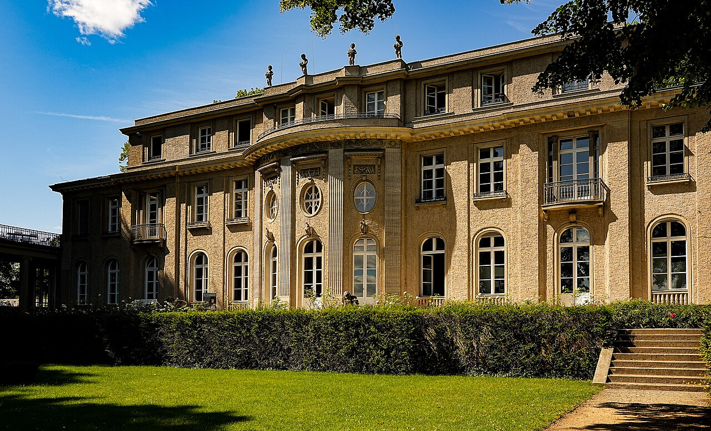

8회차의 아우슈비츠를 한 발 더 깊이 들어가는 두 강의 중 첫 번째. 아우슈비츠는 — 1940년 6월에 갑자기 시작되지 않았다. 그 자리가 가능해지기까지의 28개월 — 폴란드 침공부터 반제 회의까지 — 의 제도적·기술적 길을 따라간다.
분량 60분구성 오프닝 + 4 Beat전제 2·5·7·8회차 권장
00
오프닝 — 왜 별도 두 강의인가
5분
2회차에서 우리는 폴란드 천 년의 역사를 한 시간에 보면서 1939–45년의 한 자리를 — 그 흐름 안의 한 자리로 — 짚었다. 5회차의 바르샤바 게토 영웅 추모비, 7회차의 카지미에시 유대인 600년, 8회차의 코스 B 아우슈비츠. 시리즈는 그 자리들을 — 한 번씩 — 지나갔다.
그러나 한 번씩 지나가는 것만으로는 — 그 자리에서 무엇이 일어났는지를 — 충분히 만질 수 없다. 그래서 이 시리즈에 두 강의를 — 정규 1–10회와 별개의 특설로 — 더한다. 한 강의는 가는 길(SP01), 다른 한 강의는 도착한 자리(SP02).
"아우슈비츠는 어떻게 가능해졌는가"
한 박물관에 처음 들어가는 사람의 한 자주 묻는 질문이 있다 — "어떻게 이런 일이 가능했는가?" 박물관 측은 그 질문에 — 사실의 정확성으로 — 답하려 한다. 그러나 그 답이 박물관 안에서만 들어맞는다. 박물관 밖, 폴란드 도시들의 한 거리, 베를린 교외의 한 빌라, 우크라이나 키예프 근교의 한 협곡 — 그 자리들이 함께 답을 만든다.
SP01은 그 답의 "가는 길" 쪽을 본다. 1939년 9월 1일 폴란드 침공부터 1942년 1월 20일 반제 회의까지 — 약 28개월. 그 안에 네 자리가 있다.
점령 체제(1939–40) — Hans Frank의 General Government와 폴란드 지식층 청산
게토(1939–41) — 약 400개의 도시에 폴란드·유럽 유대인을 분리·집중·격리
T4와 Einsatzgruppen(1939–41) — 두 다른 자리에서 "어떻게 대량 살인을 운영할 것인가"의 두 학습
반제 회의(1942.1.20) — 이미 진행되던 절멸을 부처 간 조정하고, 절멸수용소 체계로 표준화
이 네 자리가 — 1942년 봄부터 본격적으로 — 아우슈비츠 비르케나우라는 한 결과로 합쳐진다. SP02가 그 자리를 다룬다.
아우슈비츠를 이해한다는 것은 아우슈비츠만 보는 것이 아니다 —
그 자리로 가는 길의 네 자리를 함께 보는 것이다.
— 특설 두 강의의 큰 그림
01
1939년 9월 — 두 침공과 점령 체제
12분
아우슈비츠의 첫 자리는 — 한 수용소가 아니라 — 한 점령 체제의 시작에 있었다.
9월 1일과 9월 17일 — 두 방향의 침공
2회차에서 짧게 본 그 자리. 1939년 9월 1일 새벽 4시 45분, 독일 슐레스비히-홀슈타인호가 그단스크 베스터플라테에 첫 포격을 했다. 같은 시각 독일 60개 사단 약 150만이 폴란드 서·북 국경을 넘었다. 2차 대전이 시작되었다.
그로부터 16일 후 — 9월 17일, 소련 약 80만이 폴란드 동부 국경을 넘었다. 이미 8월 23일 베를린-모스크바 간 몰로토프-리벤트로프 조약의 비밀 의정서가 폴란드를 — 두 국가가 — 분할한다고 약속했었다. 그 약속이 9월 17일 실행에 옮겨졌다.
한 달 안에 폴란드 정부는 루마니아로, 그 뒤 프랑스를 거쳐 런던으로 망명했다. 점령은 — 두 점령자의 — 동시 점령이었다.
독일 점령지의 세 행정 구역

1939–41년 폴란드 분할. 서·북부는 독일 제국에 직접 병합, 중부는 General Government, 동부는 소련.출처: Wikimedia Commons (CC BY-SA)
독일 점령지는 — 단일하지 않게 — 세 다른 행정 구역으로 나뉘었다.
직접 병합 지역(Reichsgaue) — 그단스크·포즈난·우치 등 서·북부. 제국의 일부로 — 곧 — 합쳤다. 이 지역에서는 폴란드인을 동쪽으로 추방하고 독일인을 정착시키는 "독일화" 정책. 우치의 새 이름이 Litzmannstadt.
General Government(GG, Generalgouvernement) — 바르샤바·크라쿠프·루블린·라돔 등 중부. 폴란드인 약 1,200만이 사는 자리. 1939년 10월 12일 수립. 수도는 크라쿠프(7회차의 그 도시).
1941년 이후 GG 확장 — 바르바로사 작전 후 동부 우크라이나 일부가 GG에 편입(Distrikt Galizien, 르비우 등).
Hans Frank — 크라쿠프 바벨의 새 주인
한스 프랑크(Hans Frank, 1900–1946)는 1939년 10월 12일부터 1945년 1월까지 약 5년 3개월 동안 GG 총독을 지냈다. 39세에 부임. 히틀러의 개인 변호사 출신, 나치당 법무 책임자. 그가 자리잡은 곳이 — 폴란드 왕들이 묻혀 있는 — 크라쿠프 바벨 성이었다.
이 한 사실에 점령 체제의 한 무게가 새겨져 있다. 7회차에서 본 폴란드 종묘이자 정신적 수도 바벨이 — 폴란드를 사실상 노예 노동력으로 다루는 한 점령자의 — 거주지가 되었다.
프랑크의 한 1939년 11월 일기 — "폴란드인은 이 제국의 노예가 될 것이다." 같은 해 12월 — "내가 어떤 종류의 폴란드 정책을 펴는지 물으면 — 나는 답하지 않을 수 없다 — 가능한 한 신속하게, 가능한 한 가혹하게."
지식층 청산 — 두 한 자리
점령 체제의 가장 빠른 첫 단계가 폴란드 지식층 청산이었다. 폴란드라는 한 나라를 — 영구히 — 무력화하기 위해 — 그 나라의 사상·교육·법·문화를 떠받친 사람들을 — 제거하는 정책. 두 한 사건이 그 정책의 시작을 표시한다.
Sonderaktion Krakau — 1939년 11월 6일
1939년 11월 6일, 점령 두 달째. 크라쿠프의 야기엘론스키 대학(7회차의 그 대학) 교수와 강사 — 그리고 다른 대학·박물관 관계자 — 183명이 콜레기움 노붐(Collegium Novum)의 한 강당에 소집되었다. 게슈타포 책임자 브루노 뮐러가 "대학 운영에 관한 강의"를 한다는 명목이었다.
강당에 모인 직후 — 183명 전원이 — 작센하우젠(Sachsenhausen) 수용소로 이송되었다. 약 17명이 첫 몇 달 안에 사망. 1940년 2월 — 국제 사회(특히 바티칸과 이탈리아)의 항의로 — 60세 이상은 일부 풀려났으나, 다하우(Dachau)로 다시 이송된 사람도 많았다. 약 30명 이상이 결국 수용소에서 사망했다.
AB-Aktion — 1940년 봄·여름
Sonderaktion Krakau가 한 도시의 한 대학의 한 점이라면, AB-Aktion(Außerordentliche Befriedungsaktion, "특별 평정 작전")은 GG 전역의 한 면이었다. 1940년 5월부터 7월까지 — GG의 폴란드 정치 지도자·교사·언론인·성직자·법조인 약 3,500–6,000명이 체포·살해되었다.
가장 큰 학살 자리가 바르샤바 외곽 팔미리(Palmiry) 숲이었다. 1939년 12월부터 1941년 7월까지 — 약 1,700명이 — 비밀리에 — 이 숲에서 사살되었다. 폴란드 의회 부의장, 올림픽 금메달리스트, 변호사 협회장 등이 한 자리에 묻혔다.
한국 청중을 위한 한 비교, 그리고 그 차이
한국 청중이 폴란드 점령기를 처음 들으면 자연스럽게 일제강점기를 떠올린다. 두 점령에 공통점이 있다 — 식민지 일상, 강제 노동, 문화·언어 통제, 지식인의 한 위치 변동.
그러나 두 점령의 한 핵심 차이가 있다. 일제는 — 적어도 정책 표면에서는 — "동화"를 목표로 삼았다(현실에서 어떻게 운영했는지는 별개의 이야기). GG는 — 표면에서도 — 동화를 추구하지 않았다. 폴란드인을 "Untermenschen"(하등 인간)으로 분류하고, 노예 노동력으로 활용하며, 영구적 무력화를 — 정책으로 — 공표했다.
이 차이가 — 게토와 절멸의 가능성을 — 만든다. 다음 Beat의 자리.
Beat 1 핵심 정리
1939.9.1 독일 침공 · 9.17 소련 침공 (몰로토프-리벤트로프 비밀 의정서).
독일 점령지 3구역: 직접 병합(서·북부) + General Government(중부, 수도 크라쿠프) + 1941 이후 동부 확장.
Hans Frank — GG 총독, 바벨 성 거주.
지식층 청산: Sonderaktion Krakau(1939.11.6, 야기엘론스키 183명) + AB-Aktion(1940 봄·여름, GG 전역 약 3,500–6,000명).
소련 점령지의 Katyn(1940 봄, 약 22,000명) — 두 점령자의 같은 정책.
일제강점기와의 한 핵심 차이 = "동화"가 아닌 "Untermenschen" 분류.
02
게토 — 분리·집중·격리의 시스템 (1939–1941)
15분
아우슈비츠의 두 번째 자리는 — 폴란드 약 400개의 도시에 — 두 해 동안 만들어졌다.
"게토"라는 단어가 가져온 한 형식
"게토(ghetto)"라는 단어 자체는 16세기 베네치아에서 왔다. Ghetto Nuovo(1516)가 — 유대인을 도시 한 구역에 격리한 — 첫 자리. 그 형식이 — 19세기 해방 시기에 거의 사라졌다가 — 1939년에 폴란드 도시들에서 다시 — 더 폭력적인 형식으로 — 부활했다.
나치 정책의 게토는 — 베네치아의 그것과 — 한 결정적 차이가 있다. 베네치아의 게토는 격리의 한 자리였고, 나치의 게토는 절멸의 한 중간 단계였다. 그러나 그 사실이 — 1939년 가을·겨울 — 게토가 처음 만들어질 때 — 모든 결정자에게 명확하지는 않았다. 게토의 한 길은 — 1939년부터 1942년 봄까지 — 천천히 — 절멸로 굳어졌다.
1939년 가을 — 첫 게토
1939년 10월 8일, 폴란드 첫 게토가 — 가장 작은 도시 중 하나에 — 만들어졌다. Piotrków Trybunalski, 우치 남쪽의 한 도시. 약 28,000명의 유대인이 한 구역에 강제 이주되었다. 같은 해 11월부터 1940년 초까지 — 폴란드 서·중부 약 20개 도시에 작은 게토들이 — 빠르게 — 만들어졌다.
1939년 9월 21일 하인리히 하이드리히(Reinhard Heydrich) — SS 정보부 책임자, 나중에 반제 회의의 의장 — 가 SS 동부 지휘관들에게 한 비밀 지령을 보냈다. "유대인을 도시에 집중시킬 것. 그 자리는 — 철도가 다니는 — 큰 도시로 한정. 작은 도시·마을의 유대인은 큰 도시 게토로 이주." 게토는 — 한 정책적 결정의 — 첫 표현이었다.
1940년 4월 — 우치(Litzmannstadt) 게토

우치(Litzmannstadt) 게토의 한 거리. 1940년 4월 폐쇄, 약 16만 유대인 + 약 5천 로마인. 1944년 8월 청산.출처: Wikimedia Commons (Public Domain)
1940년 4월 30일, 우치(Łódź, 독일 행정명 Litzmannstadt)에 폴란드 두 번째 큰 게토가 — 정식으로 — 폐쇄되었다. 약 16만 유대인. 면적 약 4 평방킬로미터. 우치는 — 직접 병합 지역(Reichsgau Wartheland)에 — 속했으므로 게토 운영이 더 빨랐다.
우치 게토의 한 특이성은 모데차이 차임 룸코프스키(Mordechai Chaim Rumkowski, 1877–1944)라는 한 인물이었다. 게토 유대인 평의회(Judenrat)의 의장. 그는 — 게토를 — 거대한 산업 공장으로 — 운영했다. "노동을 통해 살아남을 수 있다"는 한 도박. 약 12만이 옷·신발·장난감을 만들었다.
이 도박이 — 일부 — 작동했다. 우치 게토는 — 폴란드 다른 큰 게토들과 달리 — 1944년 8월까지 — 약 4년 4개월간 — 유지되었다(가장 오래 살아남은 게토). 그러나 그 끝에 — 약 7만이 — 아우슈비츠로 이송되었다. 룸코프스키도 그중 한 명.
1940년 11월 — 바르샤바 게토, 가장 큰 자리

바르샤바 게토의 한 벽. 약 3m 높이, 도시 한가운데를 18km 둘러쌌다. 1940년 11월 폐쇄, 약 40만 유대인.출처: Wikimedia Commons (Public Domain)
1940년 11월 16일, 바르샤바 게토가 — 도시 한가운데에 — 폐쇄되었다. 약 40만 유대인 — 폴란드와 유럽 단일 게토 중 가장 큰 인구. 면적 약 3.4 평방킬로미터(서울 종로구의 한 동 정도). 즉 도시 인구의 약 30%가 — 면적의 약 2.4%에 — 갇혔다.
그 인구 밀도가 — 발진티푸스(typhus)와 굶주림의 — 즉각적 원인이 되었다. 일일 식량 배급이 약 184칼로리(독일인 약 2,613칼로리). 게토 안의 한 평방킬로미터에 약 14만이 살았다. 발진티푸스는 — 1941년 여름까지 — 게토에서만 약 10만 명을 죽였다.
이것은 — 절멸수용소 이전의 — 게토 자체의 살인이었다. 1940–1942년 사이 폴란드 게토들에서만 약 80만 명이 게토 안에서 사망했다(굶주림·질병·자살·게토 안 사살 등). 절멸수용소 가스실이 본격적으로 가동되기 전에 — 이미 — 게토는 한 종류의 사망 자리였다.
Oneg Shabbat — 한 비밀 아카이브

Oneg Shabbat 아카이브의 한 자료. 1942년 8월과 1943년 4월 두 번에 걸쳐 우유 통과 금속 상자에 묻혔다.출처: Wikimedia Commons (Public Domain)
바르샤바 게토 안에서 — 한 역사가가 — 한 비밀 아카이브를 운영했다. 에마누엘 링겔블룸(Emanuel Ringelblum, 1900–1944). 게토 안의 한 작은 그룹 "Oneg Shabbat"(안식일의 기쁨)이 — 게토에서 일어나는 모든 일을 — 일기·신문 조각·아이들의 그림·이주 통지서 — 끊임없이 모았다.
1942년 8월 — 트레블링카로의 대량 이송이 시작될 때 — 첫 묶음을 우유 통에 담아 묻었다. 1943년 4월 — 게토 봉기 직전 — 두 번째 묶음을 묻었다. 세 번째 묶음은 — 묻기 전에 — 잃었다.
전후 — 1946년과 1950년에 — 첫 두 묶음이 — 폐허의 한 자리에서 — 발굴되었다. 약 25,000장의 문서. 게토 안의 한 사람의 시선이 — 다른 어떤 자료로도 대체할 수 없는 무게로 — 살아남았다.
링겔블룸 본인은 — 1944년 3월 — 게토 밖 은신처에서 발각되어 — 처형되었다. 그는 자신이 묻은 문서들이 발굴될 것을 알지 못한 채 죽었다.
1941년 봄 — 크라쿠프 게토
7회차와 8회차에서 본 그 자리. 1941년 3월 20일, 크라쿠프 게토가 — 비스와 강 건너 포드구제 지구에 — 폐쇄되었다.
크라쿠프의 유대인 인구는 1939년 약 68,000명이었다. 1939–40년 사이 — 독일 행정의 강제 이주 정책으로 — 약 50,000명 이상이 GG의 다른 작은 도시·마을로 추방되었다. 1941년 3월 게토가 폐쇄될 때 — 크라쿠프에 남아 있던 — 약 15,000–18,000명이 게토에 갇혔다.
면적 약 0.2 평방킬로미터. 바르샤바 게토의 한 작은 거울. 게토 안에 — 1942년부터 — Tadeusz Pankiewicz의 "독수리 약국(Apteka Pod Orłem)"이 유일한 비유대인 운영 약국으로 — 게토 안 사람들을 — 음식·약품·정보로 — 도왔다. 오늘 박물관으로 — 7회차에서 — 짧게 언급한 자리.
게토 청산은 두 단계로 — 1942년 6월 첫 큰 이송(주로 베우제츠로) + 1943년 3월 13–14일 최종 청산(아우슈비츠로, 또는 현장 사살). 1943년 3월 게토 청산 때 — 약 8,000명이 강 건너 인근의 플라쇼우(Płaszów) 강제 노동 수용소로 — 약 2,000명이 현장 사살. 8회차의 쉰들러 공장 박물관이 이 청산을 시간순으로 따라간다.
게토 시스템의 한 통계
폴란드 점령지에 — 1939–42년 사이 — 약 400–600개의 게토가 만들어졌다(작은 마을의 비공식 게토 포함). 폴란드 유대인 약 330만 + 점령기 이후 다른 유럽 지역에서 이송된 유대인까지 합치면 — 약 400만 명 이상이 — 어느 시점에 — 폴란드 게토 시스템에 들어갔다.
이 시스템이 — 1942년 봄부터 — 절멸수용소 체계로 — 한 줄로 연결되었다. Beat 4에서 그 결정의 한 자리를 본다. 먼저 Beat 3에서 — 그 결정 이전에 — 두 자리에서 일어난 살인의 "학습"을 본다.
Beat 2 핵심 정리
"게토" = 베네치아 1516년 → 1939년부터 폴란드에 다시. 그러나 의미는 격리 → 절멸의 중간 단계로.
1939.10.8 첫 게토(Piotrków Trybunalski). 1939.9.21 Heydrich 비밀 지령.
우치 Litzmannstadt 게토(1940.4) — 약 16만, 룸코프스키의 산업 게토. 가장 오래 1944.8까지.
바르샤바 게토(1940.11) — 약 40만, 가장 큰 게토, 일일 184칼로리, 발진티푸스로만 약 10만 사망.
Oneg Shabbat(Ringelblum) — 우유 통에 묻혀 살아남은 약 25,000장 문서.
크라쿠프 게토(1941.3) — 약 15,000–18,000명. 청산 1942.6 + 1943.3.
폴란드 게토 전체 약 400–600개, 약 400만 이상 유대인이 통과. 게토 안 사망만 약 80만.
03
T4와 Einsatzgruppen — 살인의 두 학습 (1939–1941)
13분
아우슈비츠의 가스실은 — 1941–42년 — 어떤 기술과 어떤 인력으로 — 갑자기 — 나타나지 않았다. 그 둘은 폴란드 밖과 폴란드 동부의 — 다른 두 자리에서 — 두 해 동안 학습되었다.
T4 안락사 프로그램 — 살인의 기술적 학습
1939년 10월 — 폴란드 침공 한 달 후, 히틀러가 한 비밀 명령서에 서명했다. 날짜는 — 의도적으로 — 1939년 9월 1일(침공 개시일)로 소급되었다. 명령의 내용 — "선별된 의사들에게 — 인간적으로 판단해 — 치료가 불가능하다고 판단되는 환자에게 — 자비로운 죽음을 허락할 권한을 부여한다."
이 한 명령에서 시작된 프로그램이 — 본부 주소(Tiergartenstraße 4, 베를린)에서 — 줄여서 "T4"라 불렸다. 정신 장애·신체 장애·만성 질환 환자를 — "쓸모없는 생명(lebensunwertes Leben)"으로 — 분류하고 살해하는 프로그램. 운영 기간 1939년 10월부터 1941년 8월까지(공식), 그러나 비공식으로는 1945년까지 계속.
여섯 시설 — 가스 살인의 첫 인프라

Hartheim 성(오스트리아 린츠 근교). T4 프로그램 6개 시설 중 하나. 약 18,000명 살해.출처: Wikimedia Commons (CC BY-SA)
T4는 — 독일 영토 안의 — 여섯 시설을 운영했다.
Grafeneck(슈투트가르트 남쪽, 1940.1 첫 가동)
Brandenburg(베를린 서쪽)
Hartheim(오스트리아 린츠 근교)
Sonnenstein(드레스덴 근처)
Bernburg(작센안할트)
Hadamar(독일 중부)
각 시설의 한 패턴이 거의 같았다 — 환자들이 버스로 도착, 한 등록실, "샤워실"로 가장된 한 가스실(이산화탄소 가스), 화장로, 가족에게 보내는 위로 편지. 이 패턴이 — 한 절멸수용소의 가스실 패턴 — 의 직접적 원형이다.
약 70,000–80,000명이 직접 T4 시설에서 살해되었다. 1941년 8월 가톨릭 뮌스터 주교 클레멘스 폰 갈렌(Clemens von Galen)의 공개 설교 항의 — 그 설교가 영국에서 라디오로 다시 전해지고 독일 국내에 유포되어 — 8월 24일 히틀러가 T4의 공식 종료를 — 구두로 — 지시했다.
그러나 — 종료된 것은 공식 운영뿐이었다. 비공식 살인(약물·굶주림으로의 "야생 안락사")은 — 시설과 병원에서 — 1945년까지 계속되어 — 추가로 약 200,000명을 죽였다.
T4 인력의 동방 이동 — 한 결정적 자리
여기가 — T4와 아우슈비츠를 연결하는 — 한 결정적 자리다. 1941년 가을 — T4 공식 종료 후 — 그 프로그램의 경험 있는 인력(약 100여 명)이 — 동부 폴란드 점령지로 — 이동했다.
그들 중 가장 중요한 두 인물:
Christian Wirth(1885–1944) — T4 베른부르크 시설장 → 베우제츠 절멸수용소 첫 사령관 → Operation Reinhard 검토관.
Franz Stangl(1908–1971) — T4 하르트하임·베른부르크 보안 책임자 → 소비보르 사령관(1942) → 트레블링카 사령관(1942–43). 약 90만 살해의 직접 책임자.
이 인력이 — 그들의 가스 운영 기술, 행정 절차, 시신 처리 노하우 — 를 — 동부 절멸수용소들로 — 통째로 가져갔다. 아우슈비츠의 한 자리(특히 Operation Reinhard 세 수용소)는 T4의 한 직접적 연속이다. 인력·기술·관료 구조의 한 줄이 — 1939년 독일에서 1942년 폴란드로 — 한 가닥으로 이어졌다.
Einsatzgruppen — 1941년 6월 이후의 두 번째 학습

1941년 6월 이후 Einsatzgruppen 4개 그룹(A·B·C·D)의 동부 점령지 진격. 1년 반 동안 약 100만–150만 유대인 사살.출처: Wikimedia Commons (CC BY-SA)
1941년 6월 22일, 독일이 소련을 침공했다(바르바로사 작전). 같은 날 — SS의 한 특수 부대 — Einsatzgruppen(특무부대, 직역 "임무 그룹") — 가 — 전선의 군대 뒤를 — 따라 — 동부로 진격했다.
4개 그룹(A·B·C·D), 각 약 600–1,000명. 임무 — 점령지의 유대인·소련 정치위원·공산당 관리·일부 로마인을 — 현장에서 — 사살하는 것. 가스나 수용소가 아니라 — 권총·기관총으로 — 도시 외곽의 — 한 협곡이나 숲에서.
1941년 6월부터 1943년 봄까지 — Einsatzgruppen이 사살한 유대인의 수가 — 약 100만–150만 명. 이 숫자가 — 아우슈비츠 본격 가동 이전에 — 이미 — 존재했다는 사실이 — 흔히 — 잊힌다.
Babi Yar — 1941년 9월 29–30일
Einsatzgruppen이 한 두 날 동안 — 한 자리에서 가장 많은 사람을 죽인 자리가 — 바비 야르(Babi Yar)다. 키예프(현 키이우) 외곽의 한 협곡. 1941년 9월 29일과 30일 — 이틀 동안 — Einsatzgruppe C의 한 분견대가 — 키예프 유대인 33,771명을 — 협곡 가장자리에서 — 사살했다.
33,771이라는 숫자는 — 분견대 자신의 — 자랑스러운 자체 보고서에서 나왔다. 이틀 동안 — 한 자리에서 — 어린이·노인·여성·남성. 1942년부터 1943년까지 바비 야르에서 추가로 — 약 5만 명이 더 사살되었다(유대인 외에 로마인·소련군 포로·정치범 등).
바비 야르는 — Einsatzgruppen 방식의 — 한 정점이자, 동시에 한 한계의 증거였다. 너무 많은 사람을 — 한 협곡에서 — 사살한다는 것의 한 물리적·심리적 부담. 다음 자리가 — 다른 방식을 — 요구한다.
"더 효율적인 방법"의 추구
Einsatzgruppen 운영의 한 내부 보고서가 — 1941년 가을 — 베를린에 도달했다. 보고서의 한 표현 — "지속적인 사살이 부대원들의 정신 건강에 큰 부담을 준다." 사살 자체의 — 살인자 쪽의 — 한 한계.
SS 책임자 하인리히 힘러(Heinrich Himmler) 본인이 — 1941년 8월 15일 — 민스크의 한 사살 현장을 — 직접 — 시찰했다. 그의 한 부관의 회고록에 따르면, 힘러는 사살 현장에서 — 거의 — 토할 뻔했다. 그 자리에서 — 그는 — "더 인도적이고 효율적인 방법"이 필요하다고 — 보좌관들에게 — 말했다.
"더 인도적"은 살해당하는 사람이 아닌 — 살해하는 사람 — 을 위한 것이었다. 그 한 단어가 — 한 발 — 다음으로 — 옮긴다. 가스실. 산업적 규모. 한 거리만큼 떨어진 절멸. T4가 기술을 학습한 자리였고, Einsatzgruppen이 사살의 한 한계를 학습한 자리라면, 다음은 둘을 합치는 한 결정이었다.
Beat 3 핵심 정리
T4(1939.10–1941.8 공식, 비공식 1945까지) — 6개 시설에서 가스로 약 70,000–80,000 + 비공식 약 200,000.
T4 = 가스실·시신 처리·위장 행정의 첫 인프라. von Galen 주교의 1941.8 항의로 공식 종료.
T4 인력의 동방 이동(1941 가을) — Wirth, Stangl 등 → Operation Reinhard 세 절멸수용소 운영.
Einsatzgruppen(1941.6– ) — 4개 그룹 약 3,000명이 약 100만–150만 유대인 사살.
Babi Yar(1941.9.29–30, 33,771명 이틀). 사살 방식의 한 정점이자 한 한계.
"더 효율적인 방법" 추구 = 살해자의 부담 경감. 가스실로의 한 결정의 동기.
04
반제 회의와 절멸 체계의 표준화 (1941–1942)
15분
1942년 1월 20일 — 베를린 교외 호숫가의 한 빌라에서 — 90분 동안 — 15명의 부처 책임자가 한 회의를 열었다. 그 회의는 — 결정의 자리가 아니라 — 이미 진행되던 절멸을 — 부처 간 조정하는 — 한 자리였다.
1941년 7월 31일 — "최종 해결책"의 한 공식 지시
1941년 7월 31일, Einsatzgruppen이 동부에서 한 달 반 동안 약 30만 명을 사살한 시점. 헤르만 괴링(Hermann Göring)이 — Heydrich에게 — 한 짧은 지시서를 — 서명했다.
"독일 영향력 아래의 유럽 영토에서 유대인 문제의 최종 해결책(Endlösung der Judenfrage)을 위한 모든 필요한 조직적·기술적·재정적 준비를 시작할 것을 위임한다."
"최종 해결책"이라는 표현이 — 처음으로 — 공식 문서에 — 등장했다. 그 표현 자체는 — 이전에도 — 사용되었으나 — 이 지시서가 — 그 표현을 — 공식 정책 용어로 — 굳혔다.
1941년 가을 — 가스의 첫 절멸 사용
괴링의 지시 — 그리고 동방의 한 한계 — 가 만나며 — 1941년 가을에 — 새로운 살인 방식의 — 첫 실험이 시작되었다. 두 자리.
Chełmno(Kulmhof) — 1941년 12월 8일
1941년 12월 8일, 폴란드 중부(Wartheland 지역)의 한 작은 마을 헤움노(Chełmno, 독일명 Kulmhof)에서 — 첫 절멸수용소가 — 가동을 시작했다. 시설은 한 작은 성. 살해 방식 — 가스 차량(Gaswagen). 트럭의 엔진 배기가스를 화물칸으로 보내 — 안에 있는 사람들을 — 약 30분 만에 — 질식시키는 방식.
헤움노에서는 — 1941년 12월부터 1945년 1월까지 — 약 320,000명이 살해되었다. 대부분 우치(Łódź) 게토와 그 주변의 유대인. 헤움노가 — 폴란드 절멸수용소의 — 첫 자리다. 반제 회의보다 — 43일 전에 — 가동되었다.
아우슈비츠 I — 1941년 9월의 한 실험
한 달여 전 — 1941년 9월 3일, 아우슈비츠 I(원래 폴란드 정치범 수용소, 1940년 6월 개소 — SP02에서 다룬다)에서 — 한 작은 실험이 있었다. 11호 막사 지하실. 약 600명의 소련군 포로 + 약 250명의 폴란드 환자에게 — 첫 — Zyklon B 가스 실험. 처음에는 — 살충제로 — 다른 용도로 — 사용되던 가스.
실험의 결과 — 약 850명이 — 약 20분 만에 — 사망. SS 운영진의 한 평가 — "효과적이다." 1941년 가을부터 — 아우슈비츠 I과 — 1942년 봄부터 본격 가동된 비르케나우에서 — 같은 가스가 — 본격적으로 — 사용되기 시작했다.
즉 — 1941년 9월–12월 사이 — 반제 회의 4개월 전 — 폴란드 점령지의 세 자리(Chełmno 가스 차량, 아우슈비츠 Zyklon B, Bełżec 건설 시작)에서 — 가스 절멸의 — 한 표준이 — 이미 — 만들어지고 있었다.
1942년 1월 20일 — 반제 회의

반제 회의가 열린 베를린 교외 호숫가 빌라(Am Großen Wannsee 56–58). 현재 추모관 + 자료관.출처: Wikimedia Commons (CC BY-SA)
1942년 1월 20일 오전 — 베를린 교외 반제(Wannsee) 호숫가의 한 빌라에서 — 한 회의가 열렸다. 의장 Reinhard Heydrich. 참석자 15명 — SS 책임자들 + 행정·법무·외교·점령지 부처의 차관급 책임자들. 회의록 작성자는 Adolf Eichmann(아돌프 아이히만, 당시 SS 중령, 유대인 강제 이주 담당).
회의는 약 90분. 그 사이에 음료가 제공되었다(메모에 따르면 코냑). 회의록은 — 30부 인쇄되었고 — 그중 한 부가 — 전후 1947년 — 독일 외무부 자료실에서 발견되었다. 그 한 부가 — 반제 회의의 — 유일한 직접 증거다.
이 한 자리가 — 왜 — 그렇게 중요한가?
회의는 결정이 아닌 — 부처 간 조정
반제 회의에서 — 한 가지를 — 명확히 해야 한다. 이 회의는 "유대인을 절멸하자"는 결정의 자리가 아니었다. 그 결정은 — 이미 — 1941년 여름부터 — 다양한 자리에서 — 사실상 — 진행되고 있었다. Einsatzgruppen 사살, Chełmno 첫 가동, 아우슈비츠 가스 실험, Bełżec 건설.
반제 회의의 역할은 — 그 진행되던 절멸을 — 독일 행정 부처 간에 표준화하고 조정하는 것이었다. 누가 어떤 권한을 갖는가, 누가 유대인을 어떻게 분류하는가(특히 "혼혈"의 한 곤란한 문제), 점령지·동맹국·중립국의 유대인을 어떻게 처리하는가, 운송과 재정을 어떻게 조달하는가.
회의록의 한 표현 — "유럽의 약 1,100만의 유대인을 최종 해결책의 대상으로 본다." 이 1,100만이라는 숫자가 — 영국·아일랜드·터키·스위스 등 — 독일의 직접 영향력 밖에 있는 — 유럽의 모든 유대인까지 — 포함했다. 즉 — 회의는 — 점령지뿐 아니라 — 유럽 전체의 — 유대인을 — 잠재적 대상으로 — 설정한 자리였다.
회의록의 한 언어 — "위장된 명료함"
아이히만이 작성한 회의록은 — 한 언어적 특이성을 가진다. "살해", "절멸", "가스"라는 — 직접적 단어를 — 단 한 번도 — 사용하지 않는다. 대신 "재정착(Umsiedlung)", "동방으로의 이주(Evakuierung nach Osten)", "자연 감소(natürliche Verminderung)", "특별 처리(Sonderbehandlung)" 같은 — 위장 언어를 — 사용한다.
그러나 그 위장이 — 너무 얇아서 — 행간에서 — 내용이 그대로 — 드러난다. "노동에 적합한 유대인은 동방으로 도로 건설에 투입될 것이며, 그 과정의 자연 감소를 통해 큰 부분이 분명히 사라질 것이다. 살아남은 부분은 — 가장 저항력 있는 부분이므로 — 적절히 처리되어야 한다(entsprechend behandelt werden müssen)."
"적절히 처리"가 — 살해를 — 가리킨다는 것을 — 회의에 참석한 15명은 — 모두 — 알았다. 한 부처의 책임자가 — 그 자리에서 — 의문을 — 묻지 않았다. 이 한 사실이 — 반제 회의의 — 한 가장 무거운 자리다. 비전문가가 아닌 — 부처의 한 책임자들이 — 90분 동안 — 1,100만 명에 관한 한 절멸 정책을 — 행정적으로 — 조정했고 — 한 명도 — 항의하지 않았다.
Operation Reinhard — 폴란드 동부의 세 자리
반제 회의 직후 — 1942년 봄 — 폴란드 동부(General Government) 안에서 "라인하르트 작전(Aktion Reinhard)"이 시작되었다. 이름은 — 1942년 6월 체코 저항군에 의해 암살된 — Reinhard Heydrich를 추모한 것. 작전 책임자 Odilo Globocnik(루블린 SS 사령관).
작전의 목표는 — General Government 안의 약 200만 폴란드 유대인을 — 1년 안에 — 절멸하는 것. 세 절멸수용소가 — 한꺼번에 — 가동되었다.
Bełżec(베우제츠) — 1942년 3월 17일 가동. 첫 절멸 — 르비우 게토에서 이송된 유대인. 1942년 12월까지 약 500,000명 살해. 1943년 봄 시설 해체. Christian Wirth가 첫 사령관.
Sobibor(소비보르) — 1942년 5월 16일 가동. 약 170,000–250,000명 살해. Franz Stangl이 첫 사령관. 1943년 10월 14일 — 수용자 봉기 + 약 300명 탈출 → 시설 폐쇄.
Treblinka II(트레블링카 II) — 1942년 7월 23일 가동. 약 870,000–925,000명(단일 시설 최대). 바르샤바 게토 유대인의 대부분이 — 여기서 — 사라졌다. 1943년 8월 2일 봉기 + 약 200명 탈출 → 시설 곧 폐쇄.
세 시설 합계 — 약 1,500,000–1,700,000명이 — 1942년 3월부터 1943년 11월까지 — 약 20개월 — 안에 — 살해되었다. 일일 평균 약 2,500–3,000명.
1942년 봄 — 한 체계의 완성
1942년 봄까지의 흐름을 한 줄로 정리하면 — 1939년 9월 침공 → 1939–40년 점령 체제와 게토 → 1939.10–1941.8 T4의 가스 살인 기술 → 1941.6–1943 Einsatzgruppen의 사살 → 1941.9–12 첫 가스 절멸 실험(Chełmno·아우슈비츠) → 1942.1.20 반제 회의의 행정 조정 → 1942.3 Operation Reinhard 시작.
이 흐름의 끝에 — 본격적인 한 자리 — 가 있다. 아우슈비츠 비르케나우. 1942년 봄부터 — 가장 큰 절멸의 한 자리로 — 가동되기 시작한다. 그 자리가 — 다음 강의(SP02)의 — 한 주제다.
두 가지를 함께 기억하기
첫째, 반제 회의가 — 결정의 자리가 아니라 — 조정의 자리였다는 사실. 절멸은 — 한 명의 결정이 아닌 — 수많은 부처의 일상 업무로서 — 동시에 — 진행되었다. "악의 평범성(banality of evil)"이라는 — 후일 한나 아렌트의 표현 — 의 가장 직접적 자리.
둘째, T4가 살해한 약 30만 명을 — 잊지 않는 것. 유대인 절멸 이전에 — 같은 가스로 — 같은 기술로 — 정신·신체 장애인이 살해되었다. 그들의 자리도 — 박물관 한 켠에 — 한 줄로 — 있어야 한다.
Beat 4 핵심 정리
1941.7.31 Göring → Heydrich 지시. "최종 해결책" 공식 용어.
1941.9–12 첫 가스 절멸: Chełmno(가스 차량, 12.8), 아우슈비츠 I(Zyklon B 실험, 9.3).
1942.1.20 반제 회의 — 결정이 아닌 행정 조정. 15명, 90분. "1,100만 유대인" 표적.
회의록의 위장 언어 — "재정착", "적절히 처리". 한 부처도 항의하지 않음.
Operation Reinhard(1942.3–1943.11) — Bełżec·Sobibor·Treblinka 세 시설에서 약 150만 살해.
아우슈비츠는 GG 외부(Reichsgau Upper Silesia). 별도 라인 → SP02의 자리.
28개월의 길
1939년 9월 1일 — 베스터플라테 — 부터 1942년 1월 20일 — 반제 호숫가의 한 빌라 — 까지 약 28개월. 그 28개월이 — 아우슈비츠를 — 가능하게 했다.
한 점령 체제가 — Hans Frank의 GG에서 — 폴란드라는 한 나라 자체를 — 노예 노동력으로 — 분류했다. 그 안에서 — 약 400만 유대인이 — 약 400개의 게토로 — 분리되고 격리되었다. 동시에 두 다른 자리에서 — T4의 가스 시설들과 Einsatzgruppen의 사살 행렬에서 — 살인의 기술과 한 한계가 함께 학습되었다. 1941년 가을부터 — 폴란드 점령지의 세 자리(Chełmno·아우슈비츠·Bełżec)에서 — 가스 절멸의 한 표준이 — 만들어지기 시작했다. 1942년 1월 — 베를린 교외의 한 빌라에서 — 90분의 행정 조정이 — 이 모든 것을 — 한 줄로 — 묶었다.
그 줄의 끝에 — 1942년 봄부터 — 한 자리가 — 가장 큰 자리로 — 가동되기 시작한다. 그 자리는 — 너무 큰 자리여서 — 별도의 한 강의로 — 들어가야 한다. 그것이 SP02.
아우슈비츠를 가능하게 한 것은 — 한 결정이 아니라 — 28개월의
수많은 작은 결정과 일상의 행정이었다.
— 특설 1강의 결론
다음 강 예고
특설 2강 · 아우슈비츠 — 한 자리에서 일어난 모든 것
1940년 6월 14일 첫 폴란드 정치범 728명 입소 → 1941년 비르케나우 확장과 첫 Zyklon B → 1942 IG Farben의 모노비츠 → 1944년 여름 헝가리 유대인 작전 → Vrba-Wetzler 탈출 보고서 → 1944.10.7 Sonderkommando 봉기 → 1945.1.27 해방 → Primo Levi·Elie Wiesel의 증언 → 1947 Höss 재판 → 오늘의 박물관.